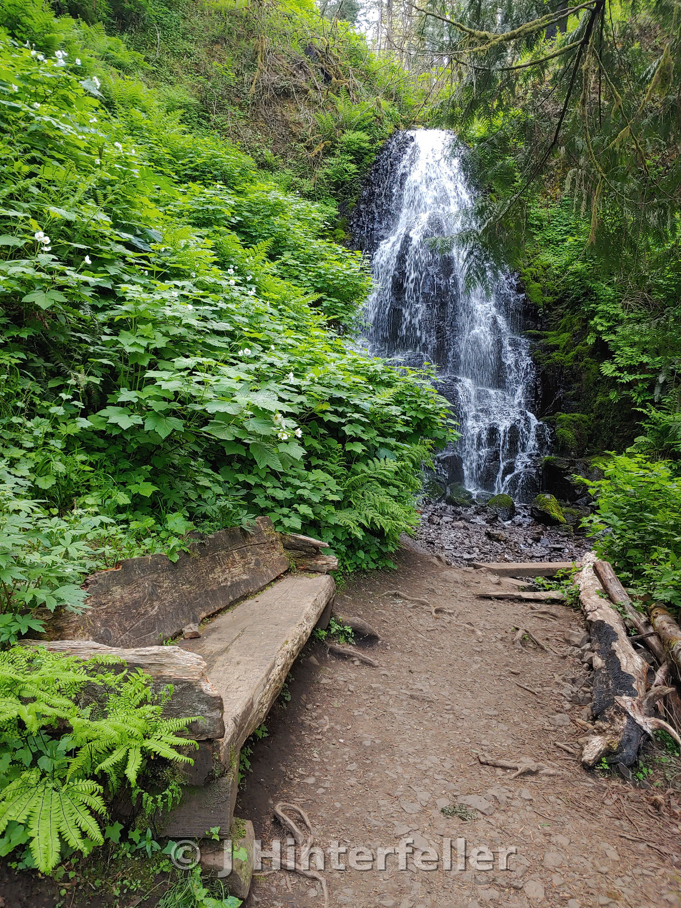
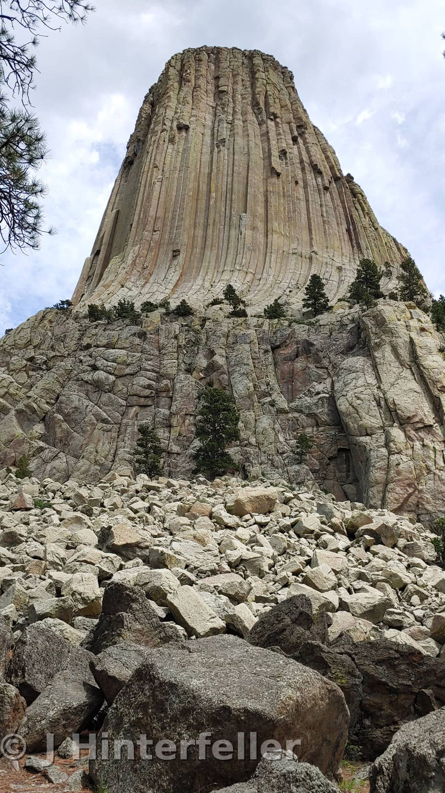
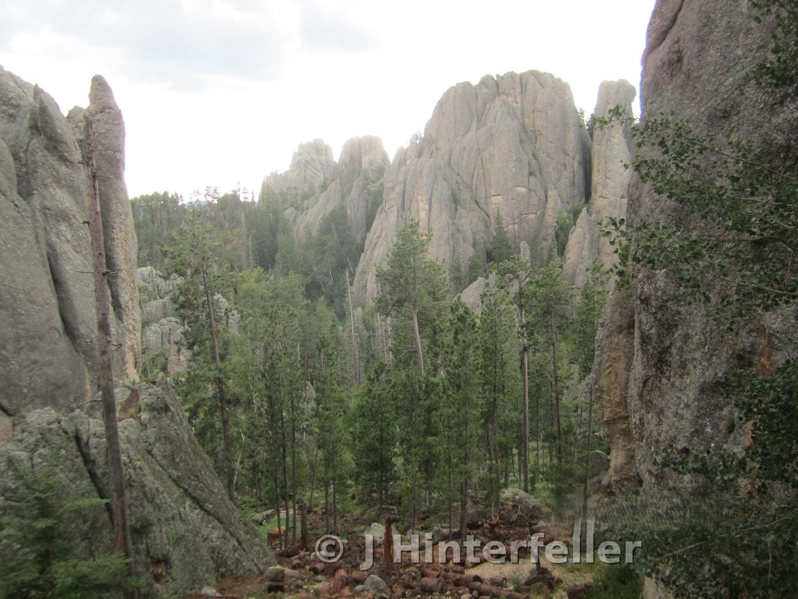

Old Faithful • Yellowstone
Become One With Nature In A National Park

Fig. 01 — Old faithful, Yellowstone — Photo: J Hinterfeller
Peaceful, until it's not.
Yellowstone—The world was granted its very first national park, establishing a sanctuary where the earth vents its deep fury beneath the sky.
I need to put the Title here when it is written
cut and paste the article here
Dispatch
Walk behind Multnomah Falls

Fig. 02 — Waterfalls of the Columbia River Gorge
The spray catches the light as you follow the narrow trail cut into the stone wall right behind the roar.
Dispatch
Devil's Tower

Fig. 03 — Wyoming monolith rising from the plains
A jagged crown against the sky. A place to stop the engine and listen to the wind run through the pine trees.
Field Notes
Roadside
Gas station coffee, paper map on the dash. No app can replace a bad fold.
Enter the parks early. Leave the parks late.
From Sea To Shining Sea
What Is Out There
A list for now, to be marked up later:
— Mt. Rainier
— Olympic Peninsula
— Yellowstone cut-off
— Blue Ridge Parkway
— Everglades at dusk

Fig. 04 — The highway lines open up westward.
Next Page
To Be Continued
More miles. More film. This page will grow when the road does.
IN RUINS / USA
{kind=link}
{kind=link}
{kind=link}